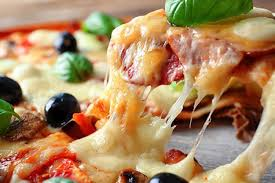
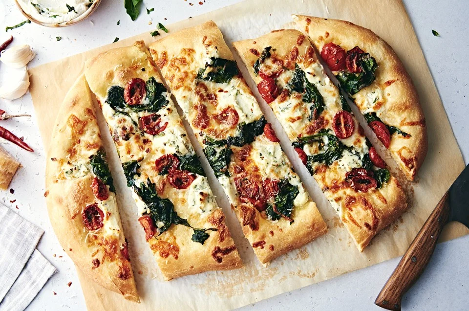

"Una pizza para cada gusto, un momento para cada rebanada. ¡Bienvenidos a tu rincón de sabor!"
Pizza Hawaiana

La pizza hawaiana es una pizza que combina ingredientes dulces y salados, y se caracteriza por llevar piña, salsa de tomate, queso mozzarella y jamón o tocino: La masa es fresca y crujiente, La salsa es de tomate italiana, El queso es mozzarella derretido, El jamón es curado, La piña es jugosa
Pizza de Pepperoni
El pepperoni es un embutido de sabor picante y ahumado que se elabora con carne de cerdo y res, y se condimenta con pimentón, pimienta negra, ajo, hinojo, mostaza, entre otras especias. Es un ingrediente fundamental en la pizza de pepperoni y uno de los más utilizados en pizzerías de todo el mundo
Pizza de Salami

Una deliciosa combinación de salsa de tomate artesanal, queso mozzarella derretido y rodajas generosas de salami especiado, todo sobre una base crujiente y dorada. El equilibrio perfecto entre lo jugoso y lo crujiente, cada bocado es una explosión de sabor que te hará querer otra rebanada. ¡Un clásico irresistible!
.jpeg)